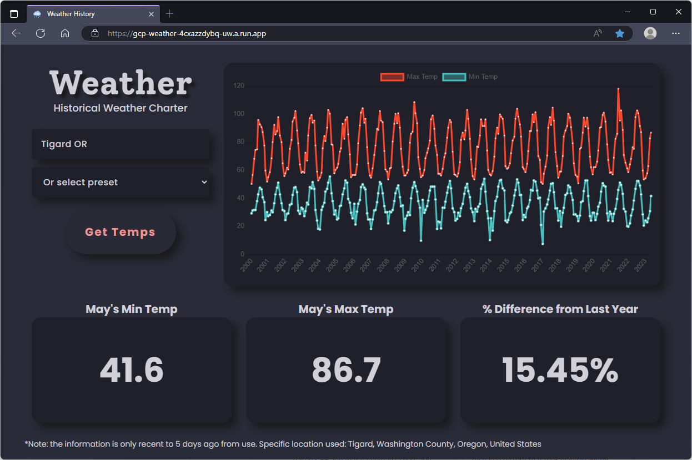

I'm Henry — a Computer Science student at Portland State graduating in March 2024. Through being admitted into the PSU Cooperative Education Program (PCEP) internship, I have been given the opportunity to work with several Portland-based tech companies through varying 6-month positions.
This includes a Quality Assurance Automation Engineering role at Trimble Viewpoint where I created API tests in Cypress, front-end UI tests in Selenium, and API performance tests in BlazeMeter; a Software Engineering Frontend position with Jama Software where I created reusable and accessible UI components in React.js for their enterprise-facing application; and a final Software Engineering Backend role with Apex Fintech Solutions where I created ACATS-focused software solutions in Go, SQL Server, and Python.
Through my studies and job experience, I have developed a drive for problem-solving and a hunger to learn more. I consistently find myself enveloped in whatever challenge rests in front of me, making use of both my own abilities as well as those around me. I can't wait to see what's to come, and please reach out to me as I'd love to share more.
#projects
Besides work in the field, I've spent my time both in and out of school immersing myself in varying side projects.
A web app that provides information in regards to historical
temperatures for almost any location in the world. Utilizing
free public APIs, the web
app charts the past ~22 years of high and low temperatures per
month for any input location. In addition, the web app displays
a couple widgets for the current month's min and max temp for
the input location as well as a percent difference to the year
prior.
In regards to the app's tech stack, it is primarily built on the
Python-based framework
Flask with some
HTML and
CSS and a tiny bit of
JavaScript. For weather
information, it asks for any location to hand to the
Nominatim API
to do the language processing while also returning a set of
latitude, longitude coordinates. These coords then get passed to
the
Open-Meteo Historical Weather API
for location-specific daily temperature data. The project's
Docker container was
deployed using
Google Cloud Platform and
uses a
Google Datastore back-end
to house all previously used temperature information.

The playoff bracket generator is a terminal-based
C++ app that can create,
seed, and store playoff brackets for any base-two number of
teams. It has a simple user interface that allows users to
progress teams through a custom bracket. On using the CLI, it
has options for the removal or modification of existing files in
its simplified file system.
The inspiration for this project was the desire to automate the
creation of fantasy-like brackets in a now-past soccer playoff
season, and this also served as a good opportunity to become
more familiar with
Git and
GitHub.
The monocular depth estimator is a research project that took
place in Winter 2023 for extracting depth information from a
single 2D RGB image on the basis that the program would be given
as little outside information as possible. Using a pretrained
transfer learning model
and the
NYU Depth Dataset V2, my team was able to script a
Python Jupyter Notebook
that would create an accurate depth-map for any given RGB image
as long as the script was given a known true-depth min and max
distance that lies within the image.